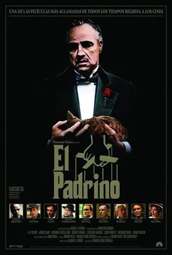
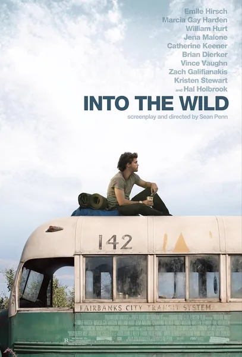
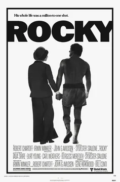
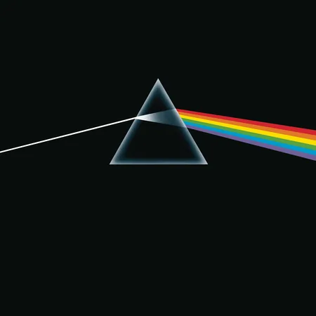
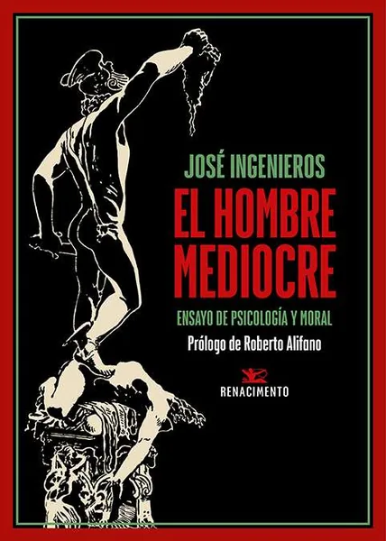
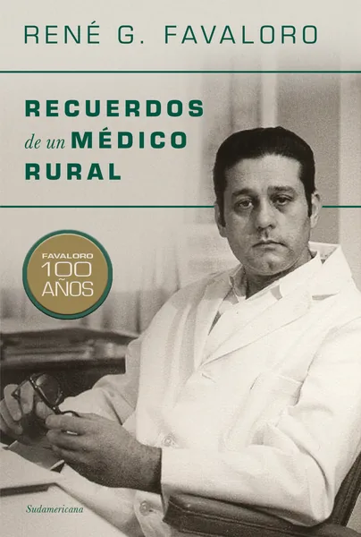
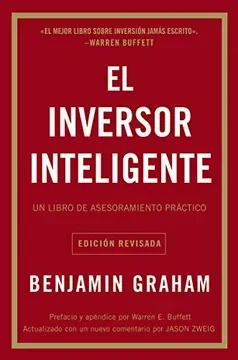

Nací en General Alvear, un pueblo del sur mendocino. El colegio secundario lo hice ahí, en la Escuela de Agricultura, que tiene más de 70 años de historia, está declarada Patrimonio Histórico y Cultural y depende de la misma UNCUYO donde ahora estudio Medicina. Ahí me recibí de Técnico en Producción Agropecuaria.
Ahí también formé parte del equipo de química y competí en las Olimpiadas Nacionales de Química (OAQ), hice vino para la bodega piloto de la escuela y organicé las 55 Olimpiadas de la Escuela.
Toco el bajo y la guitarra. A los 17 tuve una banda de funk-rock, El Barrio de las Flores. Grabamos Era, un single con producción audiovisual.
A los 18 me fui de mi ciudad para poder estudiar Medicina. No fue una vocación de toda la vida: fue una decisión intuitiva, impulsada por las ganas de enfrentarme a problemas difíciles y salir de mi zona de confort.
A los 19 empecé a formar parte del grupo Nomade, el organizador de la fiesta Nomade (la más grande del sur mendocino), organizando más de 5 eventos con más de 15.000 entradas vendidas en total.
Una vez que entré a Medicina, me puse a dar clases para juntar el capital que me permitiera emprender, algo que siempre me gustó. Con un amigo empezamos gestionando departamentos de otros dueños en Airbnb, y con el tiempo sumamos alquileres propios: departamentos que amoblábamos y preparábamos nosotros mismos, de punta a punta. Fueron dos años así, hasta llegar a ser Superanfitriones, tanto en Airbnb como en Booking. Desde los 18 descubrí la bolsa, las criptomonedas y la blockchain, y me empecé a interesar en ese mundo, que hasta el día de hoy me ha acompañado en todos mis proyectos: hoy opero activamente en bolsa, con mi propio capital, armando estrategias propias con derivados financieros, futuros y opciones sobre acciones y criptomonedas.
En 2024 dejé algunos de estos proyectos para dedicarme de lleno a estudiar inteligencia artificial: ahí fue donde la medicina y el análisis de datos terminaron de encontrarse. Hoy trabajo en INNOVADUCATE como asesor técnico de la parte médica: ahí desarrollamos soluciones a medida para empresas, y estamos construyendo Predetect, una herramienta para el triage de cáncer de mama, y LUNA, una herramienta para el diagnóstico de neumonías en la guardia.
Voy al gimnasio, y de vez en cuando kickboxing o boxeo (me gustan los deportes de contacto). Nado y corro.
Me gusta el ajedrez: jugaba de chico y ahora, de vez en cuando, abro chess.com y meto alguna partida.
Películas

El Padrino 
Into the Wild 
Rocky
Discos
La grasa de las capitales 
The Dark Side of the Moon 
After Chabón
Libros

El hombre mediocre 
Recuerdos de un médico rural 
El inversor inteligente